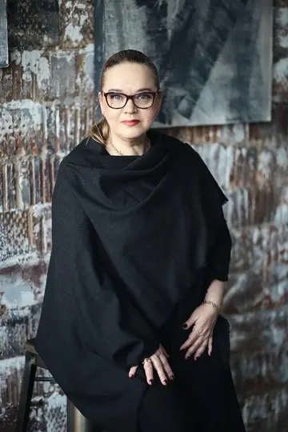
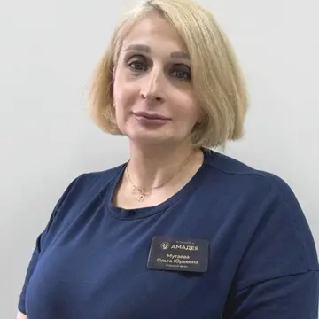
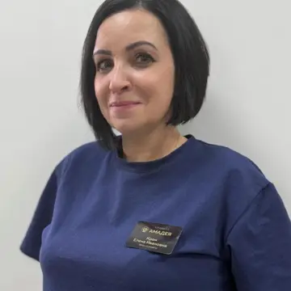
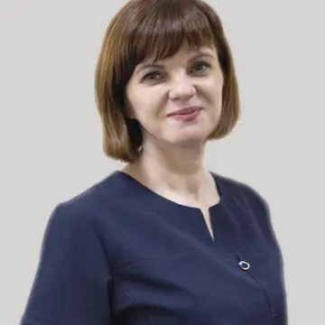
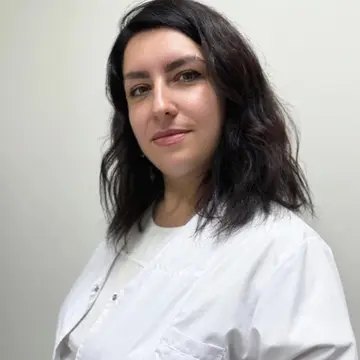

Помощь родственнику
Помощь семье при зависимости · Ставрополь
Если уговоры и контроль не работают, позвоните. За один разговор разберём, что можно сделать сегодня: от медицинской помощи до места в центре.
+7 928 963-32-80Почему семьи выбирают ОСНОВУ
Дом в лесной зоне под Ставрополем: комнаты на 2–3 человека, охраняемая территория, круглосуточное наблюдение. Мы не перенаправляем в другой город.
Острый этап проводит клиника-партнёр «Амадея» по медицинской лицензии: консультация нарколога, детоксикация, капельницы, кодирование. Дальше реабилитация в центре.
Три психиатра-нарколога, медицинский психолог и клинический психолог. Имена, должности и стаж ниже, а не «опытные специалисты» без фамилий.
От 2 000 ₽ в сутки, первичная консультация бесплатно. Что входит, написано на странице, а не сообщается после поступления.
Начнём с главного
Выберите то, что ближе. Страница подстроится под вашу ситуацию.
Помощь родственнику
Среда для восстановления
Загородный дом под Ставрополем: тихо, безопасно, без соблазнов и лишних раздражителей. На фотографиях реальный центр, лица участников скрыты ради конфиденциальности. Приехать и посмотреть можно до поступления.


Команда
Медицинский этап ведут психиатры-наркологи клиники-партнёра «Амадея». Реабилитацию и работу с семьёй ведёт команда ОСНОВЫ.

Медицинский психолог, автор методики ресоциализации зависимых

Психиатр-нарколог, психотерапевт, клинический психолог

Психиатр-нарколог, психиатр, психотерапевт

Психиатр-нарколог, психиатр, психотерапевт

Клинический психолог, психолог
Медицинский партнёр
Многие центры либо только «снимают» состояние, либо только реабилитируют. У нас острый этап проводит лицензированная клиника, а восстановление продолжается в центре без потери времени между ними.
Психиатры-наркологи партнёра готовы сопровождать резидента на протяжении всей реабилитации, помимо штатного психолога центра: наблюдать состояние, корректировать назначения, участвовать в разборе сложных периодов. Дополнительные специалисты оплачиваются отдельно.
Узнать, с чего начатьООО «Амадея»
Лицензия на медицинскую деятельность Л041-01197-26/00327766 от 10.08.2021 · г. Ставрополь, ул. 45-я Параллель, 2
Медицинские услуги оказываются по показаниям и после консультации специалиста. Оплачиваются отдельно медицинской организации; дополнительные специалисты, помимо штатного психолога, также оплачиваются отдельно.
Программа и стоимость
Стоимость на уровне других центров Ставрополя. Разница в том, что за эти деньги: собственный дом, команда врачей и психологов, медицинский партнёр по лицензии.
Цена программы несоизмерима с ущербом от употребления: потерянные деньги, здоровье, работа и отношения стоят семье дороже каждый месяц, пока ничего не меняется.
от 2 000 ₽ в сутки
Первичная консультация бесплатно · варианты оплаты обсуждаем по телефону
Не просто «оставьте заявку»
Не нужно заранее знать диагноз, программу или правильные слова. Расскажите, что происходит дома.
Позвонить сейчас+7 928 963-32-80Телефон работает круглосуточно. Первичная консультация бесплатна.
Что употребляет близкий, как давно длится кризис и есть ли признаки, при которых нельзя ждать.
Если нужна детоксикация или вывод из запоя, организуем через клинику-партнёра. По краю выезд от 40 минут.
Поможем выбрать спокойную позицию без угроз, пустых обещаний и бесконечного торга.
Когда трудно решиться
Можно не рассказывать всё сразу. Начните с одного вопроса.
Позвонить конфиденциально+7 928 963-32-80Да. Первый разговор может пройти только с родственником. Мы не обещаем согласие близкого, но поможем понять доступные действия и подготовить разговор без давления.
Да. Вы можете сначала описать ситуацию сами. Это не обязывает вас принимать решение или сразу привозить человека в центр.
От 2 000 ₽ в сутки: проживание, 4-разовое питание, ежедневные группы, индивидуальная работа с психологом, работа с семьёй. Медицинские услуги клиники-партнёра оплачиваются отдельно. Первичная консультация бесплатна.
Срыв не делает помощь бессмысленной. Мы заранее договариваемся с семьёй, что делать в этом случае, и разбираем, что предшествовало возвращению к употреблению.
Клиника снимает острое состояние. Реабилитация занимается тем, что к нему привело: поведением, окружением, привычными ходами. У нас есть и то, и другое: медицинский этап проводит лицензированный партнёр, реабилитацию ведёт ОСНОВА.
Номер используется только для ответа на ваше обращение и обрабатывается по опубликованной Политике обработки персональных данных.
Можно начать без него
Позвоните сами. Даже если близкий пока отказывается признавать проблему.
Позвонить конфиденциально Круглосуточно+7 928 963-32-80Контакты
После подтверждения номера дома карта будет показывать точную точку центра.